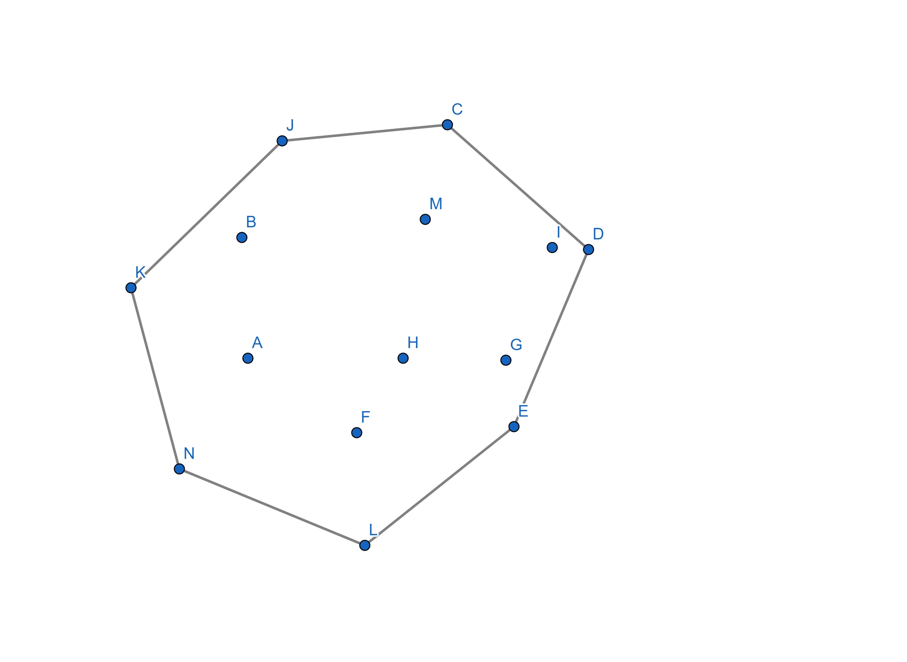
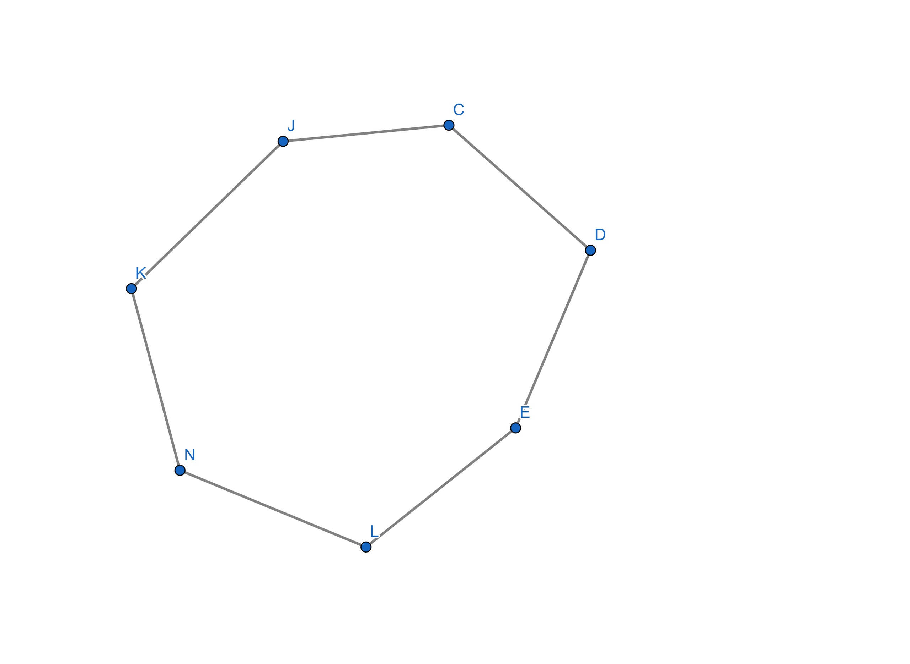
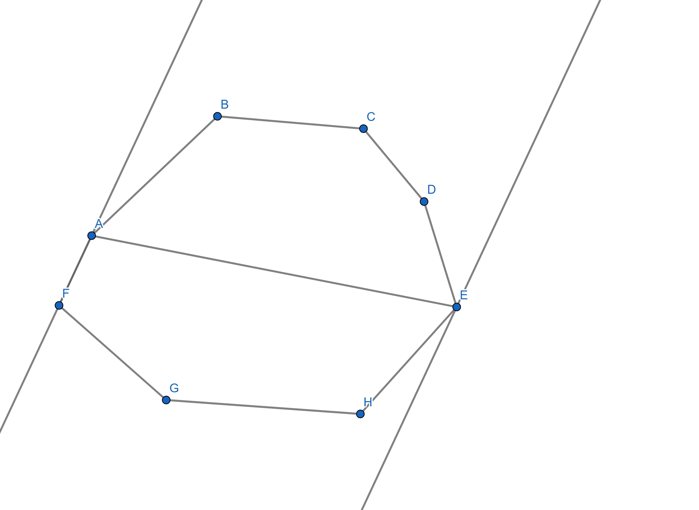

Поиск наиболее удаленных точек. Теория
Задача по поиску двух наиболее удаленных друг от друга точек на первый взгляд может показаться простой, ведь по сути достаточно просто перебрать все пары из n точек и сравнить расстояния между ними. Но в действительности этот способ не является оптимальным, так как такой алгоритм будет иметь сложность O(n^2), что достаточно нерационально применять для больших n.
Расстояние между двумя наиболее удаленными точками называется диаметром множества точек. Но так же такой диаметр является диаметром и оболочки данного множества. Иными словами можно представить несколько гвоздей вбитых в стенку, а вокруг них веревку, затянутую так, что получается многоугольник с остальными гвоздями внутри.
В общем случае понятно, что если мы выберем какой-то гвоздь, лежащий внутри многоугольника, он не будет находиться дальше всего от данного гвоздя. Ведь если продлить этот луч до пересечения с одной из сторон, то гвозди, являющиеся концами данной стороны, будут из геометрических соображений дальше. Таким образом точки, лежащие внутри получившегося многоугольника для нас не имеют значения и их можно убрать из данного множества.
Далее, чтобы, опять же не перебирать все пары точек на оболочке, можно воспользоваться методом вращающихся калиперов. Данный метод заключается в том, что сравниваться будут только такие пары точек, которые лежат на параллельных прямых, каждая их которых либо проходит через одну вершину многоугольника, либо накладывается на одну из его сторон (калиперах).

Например, на рисунке изображена оболочка некого множетсва P, представленная в виде многоугольника. Одной из пар рассматриваемых точек на данном чертеже будут точки E и F, а калиперами являются прямые L1 и L2. После вычисления расстояния между данными точками наши параллельные прямые крутятся по одному направлению, пока на одной из прямых не окажется еще одна точка, которая будет вторым концом нового измеряемого отрезка.
Далее повторяем эти действия. Очевидно, что данные операции продолжаются до тех пор, пока не встретится пара точек, расстояние между которыми уже измерено.Теперь найти пару точек из множества, наиболее удаленных друг от друга, просто и быстро.